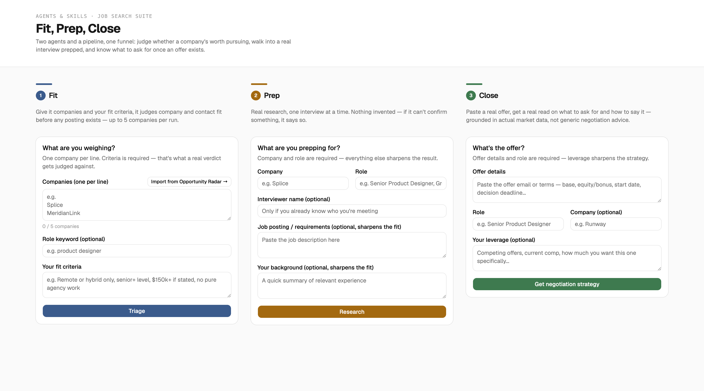
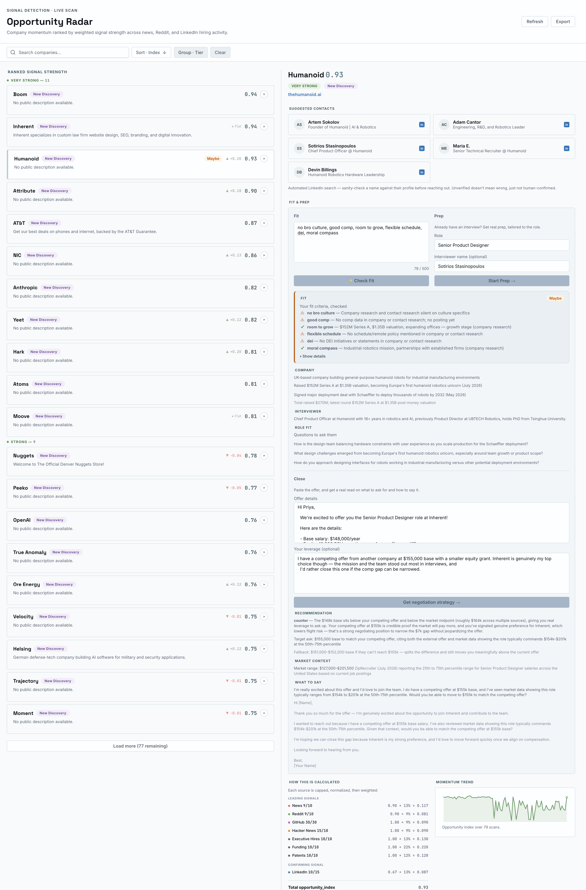

Fit, Prep & Close
Two real agents and one honest pipeline, built to complete a conversion funnel Opportunity Radar was always missing an ending for: from a lead worth pursuing, to an interview worth walking into, to an offer worth accepting.

1 Fit · 2 Prep · 3 Close — three stages of one funnel, live.
Built first to demonstrate agents + skills as a real architecture pattern — not born from a user problem, worth saying plainly rather than dressing it up after the fact.
Fit and Close came later, through real scoping sessions, not planned as a trio from day one.
This page is itself a second pivot: Fit, Prep, and Close first lived inside Opportunity Radar's own detail pane, until a live demo made clear it needed to be its own thing.

Every skill gets tested against one question before it's allowed to call itself an agent: could you write the rule down?
If a decision collapses into endless exceptions before finishing an if/then sentence, that's real evidence of ambiguity, not a feeling.
Two more tests back it up — a simpler tool's structural capability, and whether two competent people would reasonably disagree — and failing even one means naming it a pipeline, not inflating it into an agent.
Backward from how this is supposed to go, worth naming rather than hiding: the business case got worked out after the tool existed, not before.
Stepping back and asking whether it actually held up surfaced a real gap — Opportunity Radar generates leads with no path to an outcome.
That reframing named a real, multi-stage funnel — outreach, interview, offer, acceptance — with Fit, Prep, and Close as real levers at three of those stages, while landing the interview and getting the offer stay outside any tool's control.
A live test showed Interview Prep couldn't reliably discover who you'd be interviewing with, so the fix was flipping who supplies the name instead of building a better scraper.
Fit's discovery pipeline got cross-checked against an independent job-lead service rather than trusted at face value, surfacing a wrong search query and 6 of 8 signal sources silently disabled.
Cost got a real guardrail too — Fit-checking a company runs about $1 in API spend, confirmed live after a real near-miss with concurrent requests, and the per-run cap dropped from 5 companies to 3 in response.
Shipped: Fit and Close, both genuinely agentic — a real verdict, a real negotiation strategy, either could defensibly land elsewhere from identical input.
Prep shipped too, honestly named what it is: real research synthesis with no judgment call inside it, a pipeline rather than a third agent.
Cut: job-posting discovery and verification, removed from Fit entirely, since needing a live posting to judge fit contradicted Opportunity Radar's own premise of finding companies before one exists.
Willingness to pay isn't equal across the three stages — Fit is a screening step, and charging here risks taxing the exploration that makes the funnel work.
Prep fires right before a real, high-stakes event, and Close has the strongest case of all: a direct, calculable dollar ROI that makes even a modest fee trivial by comparison.
Presented honestly as a thought experiment, not a built feature — no payment processing exists, and the reasoning itself is the real design artifact here.
Live and working: Fit, Prep, and Close all run real API calls against real companies, verified end to end, not assumed from a clean-looking UI.
The honest gap this case study is built around — research done after building, not before — already produced a real next question, named but not yet scoped: what a genuine research/discovery agent would look like, built for the start of a project instead of bolted on after.
Try it live — a real, public deploy, same posture as every other live project here.
- Agents & Skills
- React + Vite
- Live Product